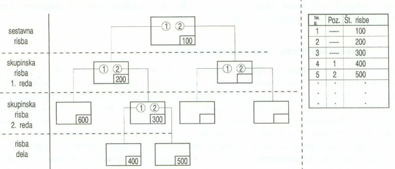

|
Naèin dokumentiranja s struktururano zgradbo izdelka je znaèilen za posamièno proizvodnjo v velikih podjetjih. Ta naèin dokumentiranja je prilagojen montaži, ki sestavlja posamezne skupine ali podsestave v celoten izdelek ali napravo. Ta naèin dokumentiranja omogoèa dokumentiranje bolj zapletenih izdelkov, ki vsebujejo veè redov podsestavov ali skupin. Podsestavi višjih redov so zapleteni podsestavi, ki niso sestavljeni iz nedeljivih delov, paè pa iz drugih, manjših in manj zapletenih podsestavov. Tudi pri tem naèinu dokumentiranja izdelamo eno samo kosovnico za celoten izdelek. Za vsako novo naroèilo je potrebno izdelati novo kosovnico. Kosovnica nudi celoten pregled risb ter vse podatke o naroèilu in naroèniku. V kosovnici so naštete vse risbe in pozicije. Pozicije kosovnice so tekoèe številke, pozicije risb pa so prirejene v posebnem stolpcu. Pri vsaki poziciji so skupaj z nazivom naštete tudi risbe. V kosovnici je vsak sestavni del oznaèen s številko pozicije. Naèin dokumentiranja s struktururano zgradbo izdelka dovoljuje veè redov skupin ali podsestavov. Paket dokumentacije v naèinu dokumentiranja s struktururano zgradbo izdelka je sestavljen iz sestavne risbe ali sestavnice, ki se deli v veè skupinskih risb. Na teh skupinskih risbah nastopajo pozicijske številke posameznih sestavnih delov. Pozicije na vsaki skupinski sestavni risbi teèejo od 1 dalje. Posamezni (nedeljivi) sestavni deli so narisani na risbah delov.  Strukturirana zgradba stavka risb in kosovnic 1. Vprašanja za usmerjanje pozornosti in usvajanje novih besed: 1.V kakšnem primeru uporabljamo naèin dokumentiranja s struktururano zgradbo izdelka? 2.Koliko kosovnic vsebuje paket dokumentacije, ki je izdelana na naèin dokumentiranja s strukturirano zgradbo izdelka? 3.Koliko in katere vrste risb vsebuje paket dokumentacije v naèinu dokumentiranja s strukturirano zgradbo izdelka? 4.Naštej podatke, ki jih lahko najdemo na kosovnici? 5.V èem je razlika med sestavnico ali glavno sestavno risbo in sestavnimi risbami posameznih skupin ali podsestavov? 6.V èem se razlikujeta med seboj sestavna risba in risba posameznih delov? 7.Koliko ravni skupinskih risb vidiš na zgornji sliki? 8.Koliko risb delov vidiš na zgornji sliki? 9.Koliko podsestavov prvega reda sestavlja izdelek, ki je dokumentiran na zgornji sliki? 10.Koliko je vseh podsestavov, ki sestavljajo izdelek, dokumentiran na zgornji sliki? 2. Zapiši od ene do pet kljuènih besed, ki povzemajo vsebino te uène enote. 3. Vprašanja za razmislek, ponavljanje in povezovanje z lastno izkušnjo: 1.Zapiši besede v besedilu te uène enote, ki jih ne razumeš! 2.Si morda besede, ki jih ne razumeš, sreèal/a že kdaj prej? V kakšnih okolišèinah in s èim v zvezi? 3.Ali lahko razberemo iz dokumentacije tudi delitev dela pri izdelavi dokumentiranega izdelka? 4. Domaèa naloga: V enem do petih stavkih zapiši, kaj ti je v tej uèni enoti najbolj ostalo v spominu. |